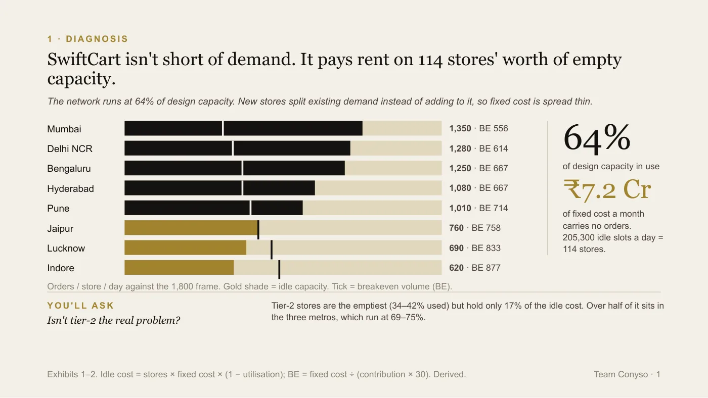
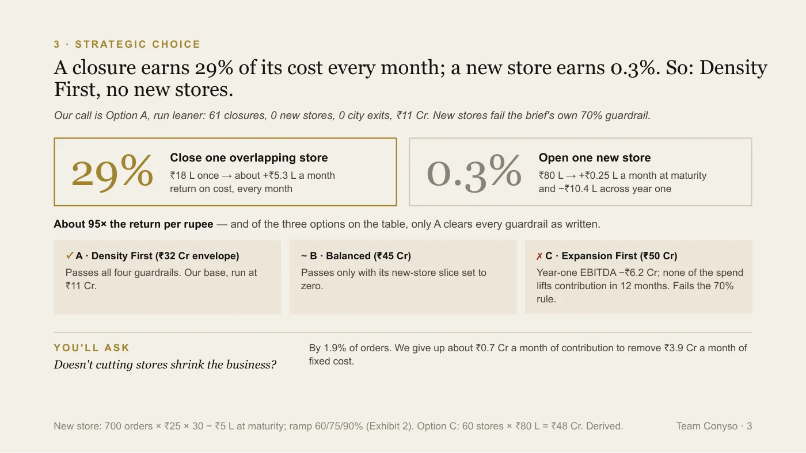
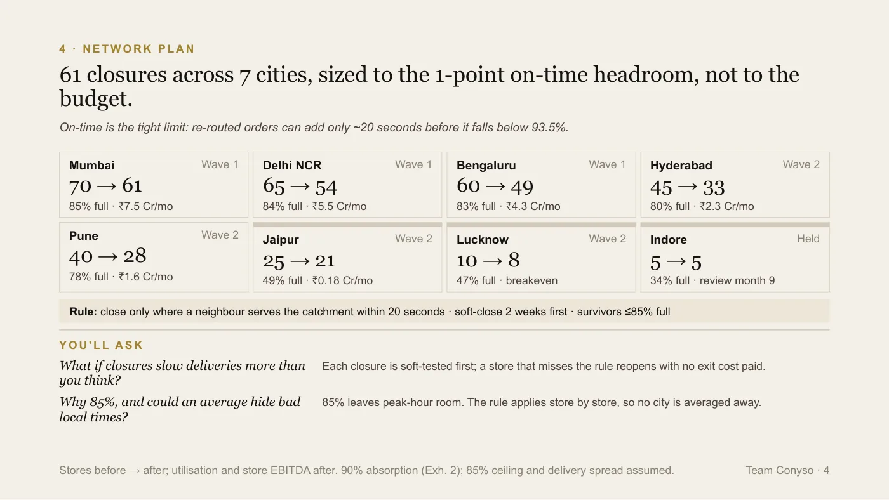
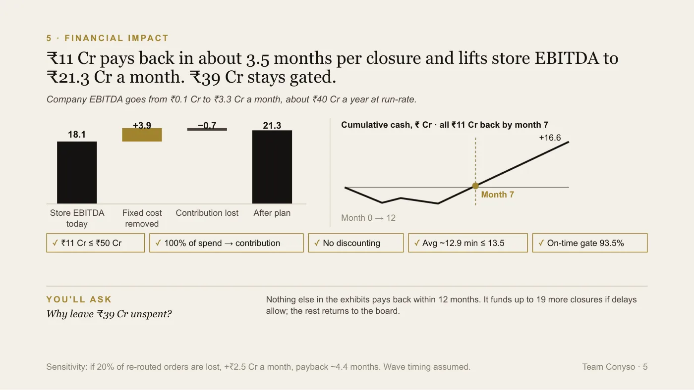

Certamus · Case competition
The Hot Seat
Interface '26, BITS Pilani · 25 September 2026 · Finalist, Final round
The brief below is restated in our own words. The original belongs to the organiser.
A company that was winning, and making nothing
The brief was an invented quick-commerce company. 320 dark stores across eight cities, about eleven million orders a month, and a promise of delivery in ten to fifteen minutes. From the outside it was growing. Inside, it was not making money.
The board gave us ₹50 crore and twelve months to fix the network it already had. Three packaged options were on the table: close overlapping stores, close some and open some, or open sixty more and grow out of it. The guardrails were the interesting part. No more than 30% of the money into things that do not lift profit inside a year, no permanent discounting, and delivery could not slip past 13.5 minutes on average or below 93% on time.
The brief belongs to the organiser, so it is restated here in our own words rather than reproduced.
The losing cities were a distraction
Add up every store's profit and it comes to ₹18.1 crore a month. Head office costs ₹18 crore. On ₹639 crore of monthly sales, the company was ending the month with about ₹10 lakh.
Everyone's eye goes to the two small cities, because they are the ones losing money. Between them they lose ₹16 lakh a month, which is under 1% of the problem. The real waste was quieter: the network ran at 64% of its capacity, and more than half of the empty space was in Mumbai, Delhi and Bengaluru, where stores had been opened on top of each other.

The diagnosis. Every store is built for 1,800 orders a day and the network averages 1,158. The gold is space the company pays for and does not use: 205,300 orders a day of it, or 114 whole stores.
Closing a store is worth about its rent
The brief carried one rule that decided the case. When a store shuts, 90% of its orders move to the nearest store and 10% are lost.
So a closure stops ₹5 to ₹7 lakh of rent and staff, and gives up the profit on one order in ten. It barely matters whether the store was a good one. What matters is whether another store can already reach its customers. "Shut the worst stores" is the wrong instruction; "shut the ones whose customers a neighbour already serves" is the right one.
That made the choice between options arithmetic rather than taste. A closure returns 29% of its cost every month. A new store returns 0.3%, and loses ₹10.4 lakh across its first year while it ramps. The expansion option did not just lose that comparison, it broke the board's own rule, because none of its spend improved profit inside twelve months. The balanced option only passed with its expansion half set to zero, at which point it was the first option.

The call. ₹18 lakh to close an overlapping store returns about ₹5.3 lakh a month; ₹80 lakh to open a new one returns ₹25,000 a month at maturity, after losing money in its first year.
The limit was seconds, not money
This is the part we expected other teams to miss.
A closed store's customers are served from further away, so their orders take a little longer. The average delivery limit had plenty of room: 12.8 minutes against 13.5. The on-time floor did not. 94% on time against a floor of 93% is one point of room, and working back from one point, each re-routed order could afford roughly twenty extra seconds.
So we closed 61 stores, not more, and spent ₹11 crore of the ₹50. More money does not buy more seconds. No city was abandoned: Lucknow reaches breakeven with two closures, and Indore was left alone with a date on it, a volume it had to reach by month nine or we would leave.
Nothing closes on a spreadsheet's say-so either. Each closure gets a two-week rehearsal first, with the store still open but its orders sent to the neighbour. If on-time falls, it goes back to normal and nothing was spent.

The network plan, sized to the one point of on-time headroom rather than to the budget. 320 stores become 259, cut hardest where stores overlap rather than where they lose money.
What it earns, and the ₹39 crore we did not spend
The company goes from about ₹0.1 crore a month to ₹3.3 crore, roughly ₹40 crore a year. Each closure pays for itself in about three and a half months. If twice as many customers walk away as the brief says, it is ₹2.5 crore a month and a four-and-a-half month payback, which still works.
The unspent ₹39 crore was the number we expected to be pushed on, so we put it in the opening rather than waiting to be asked. The board asked for a more profitable business within ₹50 crore, not for ₹50 crore to be spent. Nothing else in the exhibits paid back inside a year. The money funds more closures if the delivery data allows, and the rest goes back.
The CEO's fixed closing question was why put another rupee into this network instead of buying growth. Our answer was one line: a rupee spent on consolidation returns ₹3.50 a year, and a rupee spent on a new store returns four paise.

The money. ₹3.9 crore a month of fixed cost removed, ₹0.7 crore of contribution given up, store profit from ₹18.1 crore to ₹21.3 crore a month, and all ₹11 crore back by month seven.
Where we could be wrong
We said these in the room rather than waiting for them.
The whole plan leans on one number the brief never gives: how much slower a re-routed order actually gets. Under twenty seconds, all 61 closures hold. At fifty, only the first wave does. That is why the waves are gated and the first one is measured before the second is paid for.
The on-time arithmetic assumes delivery times spread evenly around the average, and real ones do not. And we only had city averages, not store-level data, so every closure is modelled as an average store. The overlapping ones are probably below average, which would make the real gain larger than the one we claimed, but we did not claim it.
What we would do differently
We said no to the biggest levers in the business, order value and delivery cost, because the brief never priced moving either and we would not put a number on a slide we could not show the working for. That was the right call for a scored round. In a real engagement, pricing those two levers is the first thing we would go and get: ₹10 more per order is worth about ₹2.2 crore a month on its own, two-thirds of what the whole closure programme earns.
Who did what
- Krishna ChagtiPresented the diagnosis, the empty capacity rather than the losing cities, the network plan city by city and the roadmap and its risk, and took every question with a number in it
- Krishay NayyarPresented the P&L and the trap in it, then the money and its sensitivity, drove the slides throughout, and took the questions on why not B or C
- Drishti SoniOpened with the answer, made the call between the options, presented the twenty-second limit, closed on the CEO's question, and took the questions on running it